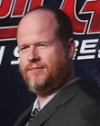
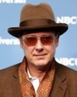

2012년 《어벤져스》의 후속편이자 마블 시네마틱 유니버스 페이즈 2의 다섯 번째 작품으로, 원래는 1단계를 끝맺었던 전편처럼 2단계를 마무리하는 작품으로 알려졌으나, 마블에서 페이즈 2의 마지막 작품은 《앤트맨》으로 수정했다고 밝혔다, 마블 스튜디오에서 제작하고 월트 디즈니 스튜디오 모션 픽처스에서 배급한다.
|  |  |
 |
 |
 |
|---|---|---|---|---|
| 조스 웨던 (감독) |
로버트 다우니 주니어 (토니 스타크) |
크리스 에반스 (스티브 로저스) |
크리스 헴스워스 (토르) |
마크 러팔로 (브루스 배너) |
 |
 |
 |  |
|
|---|---|---|---|---|
| 제레미 레너 (클린트 바튼) |
스칼렛 요한슨 (나타샤 로마노프) |
돈 치들 (제임스 로드) |
제임스 스페이더 (울트론) |
사무엘 L. 잭슨 (닉 퓨리) |
토니 스타크 : 기절해 기절해 기절해!!! / 저 빌딩 바로 살수 있을까?
퀵실버 : 왜?? 예상 못했어??
토르 : 조심해!!저 여자가 내 머리에 뭘 집어 넣으려고 했어! 인간들은 견디지 못할거야!!하지만 난 전지전능한 신이지^^
클린트 바튼 : 이 문을 나서는 순간, 너도 어벤져스야.
일단 마블 시네마틱 유니버스 사상 최고의 퀄리티와 스케일의 액션이 시종일관 눈을 즐겁게 만든다는 평이 대다수다. 화려했지만 기교는 떨어졌던 전편들을 의식한 건지 본작의 액션 시퀀스는 아주 작정하고 만들었다는 느낌을 받을 만큼 신속하고, 연속적이며 치밀한 구성으로 만들어졌다. 새로 추가된 히어로들 또한 기존 어벤져스 맴버들과 겹치지 않는 액션을 보여줌으로써 다채로움을 더한다. 초반부 히드라 기지 침투 작전과 후반부 소코비아의 최종결전에서는 롱테이크 기법을 아낌없이 활용, 어벤져스 멤버 개개인이 보여주는 박력과 기교 넘치는 액션들, 합이 착착 맞아떨어지는 팀워크에서는 그야말로 간지가 폭풍처럼 휘몰아친다. 더군다나 전편에서 악당의 졸개들은 외계인(= 생명체)였던것에 반해 이번에는 악당의 졸개들이 로봇이어서 액션이 굉장히 과격해졌다. 농담이 아니라 로봇의 사지, 머리를 자르거나 분지르고, 아예 가루로 만들어 버리는등 여러모로 강렬해졌는데 단적인 예로 1편에선 캡틴 아메리카가 적에게 방패를 던지면 적이 방패에 맞고 쓰러진뒤 방패가 돌아왔는데 이번엔 캡틴이 방패를 날리면 적에게 방패가 박히고 캡틴이 박힌 방패로 드롭킥을 날려서 몸을 말 그대로 박살낸다.
1편 못지않게 캐릭터 비중의 분배가 잘 된 편으로, 신예 캐릭터인 막시모프 남매도 토니 스타크의 원죄와 관련되어 이야기의 흐름에 들어올 개연성을 갖췄으며, 이들을 어벤져스로 영입하는 데 호크아이가 중요한 역할을 함으로써, 부족했던 존재감에 비중이 좀 더 생겨났다. 스칼렛 위치의 코스튬을 과연 마블이 잘 소화해 낼 수 있을까 하는 우려가 굉장히 컸지만, 영화에서 현실성과 비주얼을 동시에 만족한 코스튬이 등장하면서 호평받게 되었다.
또한 배우 수현이 연기한 헬렌 조가 개봉 전 여론의 비관과는 다르게 단역 수준이 아닌 꽤 중요한 역할을 맡은 조연이라서 다행이라는 평도 많다. 그동안 히어로 영화에 출연한 동양인 캐릭터는 그다지 활약을 못 한 케이스가 많았는데 헬렌 조는 정 반대로 큰 활약을 해냈기 때문이다.
빌런 묘사와 함께 에이지 오브 울트론이 가장 많이 까이는 이유 중 하나. 내용이 복잡해진 만큼 짧은 길이의 자잘한 시퀀스들이 많아졌는데 이로 인해 쓸데없는 시퀀스들이 많아지고 정작 중요한 장면의 시퀀스들이 적어져 뚝뚝 끊기는 느낌이 커졌다. 토르의 환상과 우물씬이 특히 그런데, 이 경우 이 환상과 우물씬의 대량 편집 때문에 없는 거만 못하게 되어 토르: 라그나로크가 나오기 전까지 무슨 말인지도 알 수 없게 만들었다. 참고로 마블 측은 농장씬과 환상씬을 빼라고 지시했으나 조스 웨던이 강행했다고 한다.
인피니티 스톤이 박히지 않은 인피니티 건틀릿을 타노스가 한손에 끼우며 등장하며, 직접 나설 것이라는 대사를 한다. 이후 "어벤져스는 돌아온다.(The Avengers will return)"라는 문구가 뜨며 영화 종료.